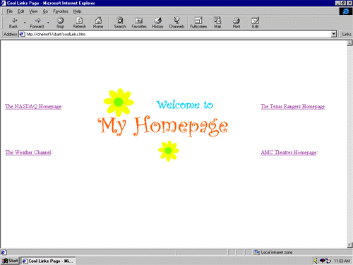
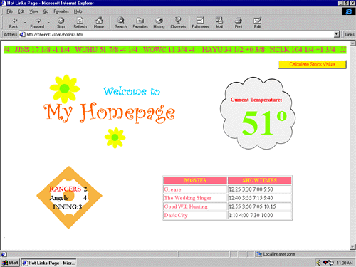

|
| ||
|
| ||
Charles Heinemann
Program Manager, XML
Microsoft Corporation
April 13, 1998
The following article was originally published in the Site Builder Network Magazine "Extreme XML" column (now MSDN Online Voices Extreme XML).
Today's subject comes from Jenny in Seattle. She has a home page posted on her local ISP, and she thinks it's totally "BOR-RING."

Figure 1: Jenny's home page before XML
It's got a nice little graphic and links to the sites she thinks are cool, but nothing on the page itself is very interesting to Jenny, nor to her friends who visit the site. At best, it's a way station for travelers looking to go on to a more interesting site. At worst, it's an unnecessary extra click, linking Jenny to a site where she still has to hunt for information.
Well, Jenny, let's see if we can give you and your fans a reason to stick around your site.
What would make Jenny's page more interesting? Information that she and others found interesting. What sort of information is that? Up-to-date information that impacts lives.
At present, Jenny's home page has links to a financial site -- for information concerning her investments; a sports team's site -- for information on the hometown ballclub; a weather site -- for local weather; and an entertainment site -- for information on movies playing at local theaters.
Suppose Jenny could pull down to her page all the specific information she needs from all those sites. Suppose she could provide the up-to-date information available on other Websites, right there on her home page.
When published in HTML, the information Jenny seeks is pretty much inaccessible by any means other than simply viewing the page. If, however, that data were formatted in XML and made available on a server, it would be accessible to Jenny in multiple ways.
One such way is through script, which Jenny could use to download the XML and display the data on her page.
From script, the XML parser (msxml) shipped with Internet Explorer 4.0 can be implemented by creating an ActiveX object.
var xml = new ActiveXObject("msxml");
The XML parser will check to see if the XML data source is well-formed (i.e., syntactically correct), and will expose an object model that can be used to navigate and manipulate the XML data source.
The above code creates an XML document object. However, that object does not yet represent an actual XML data source. The XML data source is loaded by assigning that object's URL property a valid URL:
xml.URL = "http://server/xmlDataSource.xml";
Now that the data is accessible on the client, it can be displayed in an HTML page. This means that Jenny does not need to link to external sites for information. She can simply pull the information that she wants to her own site, consolidating information that was once dispersed throughout the Internet.
Let's begin our makeover of Jenny's home page by getting rid of that link to the financial site. Jenny uses that site to view the current prices of the stocks she owns. Although she is interested in only five stocks, she has to wade through tons of forms and buttons simply to view their current price. Needless to say, this could be improved.
Using script, Jenny can download only the data she is interested in and create a stock ticker reflecting periodic updates of that data. As mentioned before, Jenny can create an XML document object and assign that object a URL:
var xml = new ActiveXObject("msxml");
xml.URL = "http://server/stockQuotes.xml";
The data source received on the client might look like the following:
<stocks>
<stock>
<name>WOWC</name>
<price>16.25</price>
<change>0.5</change>
</stock>
<stock>
<name>HAYU</name>
<price>32.75</price>
<change>-1.375</change>
</stock>
<stock>
<name>NCLK</name>
<price>101.5</price>
<change>-1.0</change>
</stock>
<stock>
<name>JJNS</name>
<price>22.625</price>
<change>4.25</change>
</stock>
<stock>
<name>WUHU</name>
<price>57.75</price>
<change>1.625</change>
</stock>
</stocks>
Jenny can now use the XML object model to walk the tree, locating the data she wants to display. From the root element (the "stocks" element), each "stock" element and the data within can be accessed. The script below creates a number of SPAN elements consisting of the stock price and that price's change for that day:
var stocks = xml.root.children;
var string = "";
var remainder;
var change;
for (var i =0;i<stocks.length;i++){
remainder = toFraction(stocks.item(i).children.item(1).text);
change = parseInt(stocks.item(i).children.item(2).text)
+ " " + toFraction(stocks.item(i).children.item(2).text);
string += "<SPAN>" + stocks.item(i).children.item(0).text + " "
+ parseInt(stocks.item(i).children.item(1).text) + " "
+ remainder;
if (parseFloat(stocks.item(i).children.item(2).text)>0)
string += " +";
else string += " ";
string += change + "</SPAN>";
}
You may have noticed in the XML above that the stock comes to us in decimal format. This is extremely useful when it comes to calculating the value of the stock, but it is less useful when displaying the price of the stock. It is more user friendly to display the price in fraction form. Below is a function Jenny can use to do this.
function toFraction(price){
price = Math.abs(price);
price = price*1000;
price /= 125;
var fraction = price % 8;
if (fraction !=0){
if (fraction % 4 == 0)
fraction = "1/2";
else if (fraction % 2 == 0)
fraction = (fraction/2) + "/4";
else fraction += "/8";
}
else fraction = "";
return fraction;
}
Because the data is delivered to the desktop as data, rather than as text to be displayed, Jenny can manipulate the data on the desktop and display the data in whatever form she finds most useful.
Having accessed the data above and manipulated it to suit her needs, Jenny can then, using the DHTML object model, insert that data into a <MARQUEE> element:
document.all("StockTicker").innerHTML = string;
. . .
<MARQUEE ID="StockTicker"></MARQUEE>
She can then call the setTimeout method, causing the function to wait for ten seconds and then repeat the above process. It is the setTimeout method that allows her to update the data on the client:
window.setTimeout("getStocks()", 10000);
The cornerstone of her site's financial side might be the stock ticker, but what's a look without accessories? Not to worry; XML will allow Jenny to also add some functionality to her page. Because the data used to populate the HTML elements still exists as XML on the client, Jenny can write scripts that utilize that data. For example, she could write a script that calculates the current value of her portfolio.
The key to the stock calculator is assigning the object representing the XML data source containing the stock data to the global variable "stockXML". This allows the XML data source to remain accessible:
<SCRIPT>
var stockXML;
function getStocks(){
var xml = new ActiveXObject("msxml");
xml.URL = "http://www.Stocks.com/stockQuotes.xml";
stockXML = xml;
}
function calculateStockValue(){
var value=0;
var xml = new ActiveXObject("msxml");
xml.URL = "http://server/myShares.xml";
var myStocks = xml.root.children;
var stocks = stockXML.root.children;
for (var i=0; i<myStocks.length; i++){
var stockPrice;
var numshares =
parseInt(myStocks.item(i).children.item(1).text);
for (var j=0; j<stocks.length; j++){
if (stocks.item(j).children.item(0).text
== myStocks.item(i)children.item(0).text)
stockPrice =
parseFloat(stocks.item(j).children.item(1).text);
}
value+=parseInt(stockPrice*numShares);
}
alert("Your stock is currently worth $" + value );
}
</SCRIPT>
Jenny can use the same technique employed in the stock ticker example to create a weather section that gets updates by the minute and a sports section that monitors the inning-by-inning status of Jenny's favorite ball club.
In addition, using data binding, Jenny can create a movie section that lists the showtimes and titles of the movies playing at Jenny's local cinema.
The XML Data Source Object (DSO) is a Java applet that can be used to bind an XML data source to a page. To utilize the XML DSO, all Jenny has to do is insert the following applet element into her page and pass it a parameter pointing that applet to the proper XML data source:
<APPLET CODE=com.ms.xml.dso.XMLDSO.class WIDTH=0 HEIGHT=0 ID=Movies MAYSCRIPT=true> <PARAM NAME="url" VALUE="http://server/movies.xml"> </APPLET>
She can then bind the data source object created by the applet to the table that is to hold the movie information:
<TABLE BORDER=1 DATAsrc=#movies>
Within the body of the table, she can then also bind the "title" and "showtimes" elements within the data source to two <SPAN> elements within the table:
<TR> <TD STYLE="font-weight:bold;color:#FF6984"> <SPAN DATAFLD="title"></SPAN> </TD> <TD><SPAN DATAFLD="showtimes"></SPAN></TD> </TR>
The XML DSO now does the rest, filling the table with all of the movies and showtimes within the data source.
Jenny's home page has now been transformed from a directory into a live information source:

Figure 2: Jenny's home page after XML
The important thing to remember from Jenny's experience is not that HTML is "BOR-RING," but that data is "EXCITING." Being able to pull data down to the client, and manipulate and display that data, can make that information more useful to you and others.
In short, it's cool that Jenny can get information specific to her needs right there on her own Web page. But it's even cooler that she is in control of that data once it hits the desktop, that she can use that data in ways that are interesting to her and those who visit her site.
Charles Heinemann is a program manager for Microsoft's Weblications team. Coming from Texas, he knows how to think big.
Dear Charles:
I hate to tell you this, since your March 9 column Get Your Data on Board was otherwise very good and informative, but you are wrong on some of your facts. You start with the statement that putting data into a Microsoft Access database does not allow you to get to it from a Web page. That is not exactly true, since ODBC can link to an Access database and there are many Web-to-database tools out there that can access database info in ODBC-compliant databases. I know this because I do it every day in my line of work. Just thought you'd like to know.
Tim
Charles answers:
In case others were similarly misled by my ambiguities last month, Tim is correct. You can access database docs from a Web page without using XML. The message I hoped you'd glean is that database information in ODBC-compliant databases is not always "easily accessed" by, among other things, HTML pages. XML is about making data universally accessible. Its value lies not in its ability to make specific types of data accessible to specific clients, but in its ability to make all types of data accessible to all types of clients.
Dear Charles:
Very helpful column. How about the reverse? It's not that obvious to me how you can take the XML document and put it back into Access or perform operations on it. Could you consider this for a future column?
Steven
Charles answers:
Steven, and others with the same question, thanks for the feedback concerning updating the database from the client. This topic will need to be addressed in the near future.
For technical how-to questions, check in with the Web Men Talking, the Web Workshop's answer pair.
Did you find this material useful? Gripes? Compliments? Suggestions for other articles? Write us!
© 1999 Microsoft Corporation. All rights reserved. Terms of use.